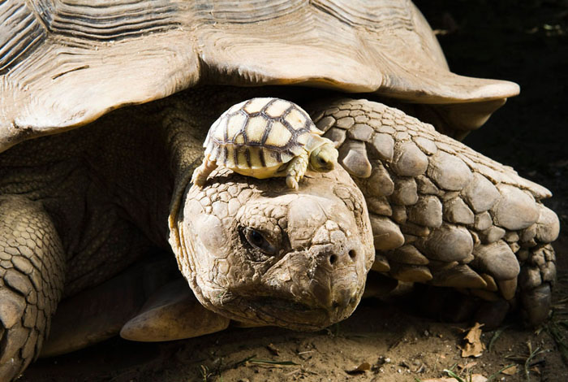

Черепахи

Черепахи — уникальные по своей анатомии и физиологии животные. Благодаря специфической узнаваемой внешности их легко распознает даже не сведущий в биологии человек. Черепахи составляют отдельный отряд в классе Рептилий, который включает 230 видов.
Первое, что бросается в глаза при взгляде на черепаху, это панцирь. Он представляет собой особое костное образование, не встречающееся больше ни у каких позвоночных животных. Собственно этому костистому покрову и обязаны рептилии своим названием (черепаха от слова череп). Панцирь состоит из двух частей: верхней — карапакса, и нижней — пластрона. Каждая из этих частей образована отдельными костными пластинами, намертво срощенными между собой. Карапакс срастается с ребрами и отростками позвонков, а пластрон — с ключицами и брюшной стороной ребер. Между собой карапакс и пластрон соединяются костной перемычкой или прочными сухожилиями. Таким образом верхняя и нижняя части панциря составляют единое целое, прочно соединенное с телом черепахи. Черепаха не может шевелится внутри панциря и вообще крайне ограничена в свободе движений, фактически она может двигать только шеей и конечностями, торчащими из панциря. Несмотря на такое несовершенство и статичность конструкции черепахи вовсе не так уж одинаковы, как можно о них подумать. Внешний облик этих животных может быть очень разным.
Каролинская коробчатая черепаха (Terrapene carolina).
Большинство черепах — животные среднего размера, но среди них есть и крошки с длиной тела всего 10 см (паучья и крапчатая черепахи), и гиганты, весом по 100 кг (морские и галапагосские черепахи). Но самой крупной в мире является кожистая черепаха, которая может достигать 2 м в длину и весить до 600 кг!
Панцирь черепах может иметь разную форму: у сухопутных видов он, как правило, выпуклый и округлый, у пресноводных — плоский и овальный. У морских черепах панцирь округлый спереди, а сзади заострен, такая форма делает его обтекаемым. Сверху панцирь черепах покрыт роговыми пластинами, от которых зависит его узор. Особняком стоят кожистые и мягкотелые черепахи, у которых костная основа панциря покрыта не рогом, а кожей, отчего он кажется мягким.
Чаще окраска носит маскировочный характер: у наземных видов она бывает песочной или серой с неяркими разводами, имитирующими камни, у пресноводных — однотонная, черная, зеленовато-бурая (под цвет тины). Но бывают черепахи с ярко и причудливо изукрашенным панцирем (например, иероглифовая, географическая).
Поверхность пластин может быть блестяще-гладкой, шероховатой, конически-заостренной или вытянутой в форме зубцов.
У черепах существуют разные способы «самоупаковки» в панцирь: одни виды (подотряд Скрытошейные) втягивают голову внутрь, при этом их шея складывается внутри панциря как у лебедя; другие виды (подотряд Бокошейные) просто сгибают шею вбок и прижимают голову к плечу, а вот большеголовая и все виды морских черепах совсем не способны втягивать голову. Наконец, у черепах киникс входные отверстия дополнительно закрываются гибким щитком, что делает их совершенно «герметичными».
Эти животные не имеют зубов и откусывают пищу краями челюстей, у некоторых черепах (грифовая и все виды морских) заостренные челюсти напоминают клюв. Черепахи плохо слышат, но имеют хорошо развитое цветное зрение, острое обоняние и тонкий вкус. Они способны найти пищу, ориентируясь только на запах, если черепахи видят корм, то отдают предпочтение красным и ярко-зеленым продуктам. Головной мозг у этих животных развит слабо, поэтому они несообразительны и не поддаются дрессировке. Конечности у сухопутных черепах похожи на столбы, у пресноводных уплощены и имеют перепонки между пальцами, а у морских превратились в ласты. Черепахам присущ половой диморфизм: самцы отличаются от самок более длинным хвостом, специальными шпорами на задних лапах и более крупными размерами.
Черепахи встречаются на всех континентах, кроме Антарктиды и приполярных областей. Эти скромные и неуклюжие, казалось бы, животные освоили все среды обитания — их можно встретить в лесах, степях, пустынях, болотах, реках, морях и океанах. Только самые высокие горы и быстрые реки не покорились им.
Образ жизни разных видов сильно отличается. Жизнь сухопутных черепах на удивление монотонна — целыми днями они неспешно обходят территорию и кормятся на ходу. Жаркий полдень и ночь они проводят в каком-нибудь укрытии — случайной норе, расщелине, под корнями деревьев. Виды умеренного пояса в таких укрытиях проводят всю зиму, они залегают в спячку и могут провести во сне до 9 месяцев. Например, спячка среднеазиатской черепахи может начаться… в июле и вызвана она не похолоданием, а отсутствием корма в жаркой пустыне (просыпаются черепахи в марте-апреле).
Пресноводные черепахи более активны, они периодически ныряют в водоем и ловят рыбу в толще воды, наевшись, они выбираются на берег и подолгу греются на берегу. Кстати, эти виды отличаются подвижностью и легко забираются на наклонные стволы деревьев в поисках удобного места для отдыха. В случае опасности пресноводные черепахи могут нырнуть и залечь на дне водоема, не всплывая они могут провести на дне до 2 суток! Пресноводные черепахи умеренной зоны также залегают в спячку, но зарываются для этого в ил на дне водоема. Для того, чтобы проводить столько времени под водой не всплывая, у дышащих легкими черепах появилось специальное приспособление — их глотка и анальные пузыри (специальные выросты кишечника) пронизаны множеством сосудов, а кровь может поглощать кислород прямо из воды.
А вот морские черепахи утратили связь с сушей. Все время они проводят в морях и океанах вдали от берегов, даже спят на поверхности воды. На сушу выбираются только самки для откладки яиц.
Черепахи ведут одиночный образ жизни, но к собратьям совершенно не агрессивны. Они не защищают территорию, не конкурируют за пищу и при случае спокойно терпят соседство собратьев.
По характеру питания эти рептилии делятся на растительноядных и хищных. Исключительно растениями питаются сухопутные виды, поскольку на суше догнать добычу им не под силу. Черепахи предпочитают поедать сочные корма, при случае с удовольствием лакомятся дынями, арбузами, ягодами. Пресноводные виды питаются преимущественно рыбой, раками, червями, улитками, личинками насекомых, иногда поедают водную растительность, яйца крокодилов и падаль. Изредка им удается поймать крупную добычу — водоплавающую птицу или змею. Морские черепахи питаются смешанной пищей: например, зеленая черепаха предпочитает водоросли, изредка поедая крабов и моллюсков, а морские черепахи бисса и логгерхед, наоборот, обращают на водоросли мало внимания, предпочитая поедать моллюсков, крабов, асцидий, медуз и губки. На рыб морские черепахи охотятся не часто.
Хищные черепахи не утруждают себя замысловатой техникой лова и просто хватают любую живность, попавшую в поле зрения. Исключение составляет бахромчатая черепаха, или матамата. Голова этой черепахи плоская и украшена выростами, что придает ей вид потрепанного листка. В таком обличье матамата залегает на дне и просто ждет, пока обманутая камуфляжем рыба или лягушка не подплывет поближе, затем матамата просто открывает рот и поток воды засасывает добычу прямо в пасть.
Еще дальше пошла грифовая черепаха, у которой в пасти есть розовый червеобразный отросток. Грифовая черепаха также затаивается на дне с открытой пастью, при этом червеобразный отросток шевелится и приманивает рыбу. Польстившись на «червячка», рыба оказывается схваченной. Между прочим хватка грифовой черепахи необычайно сильная: она может перекусить палец человеку. Пьют все виды черепах очень редко, довольствуясь влагой, содержащейся в корме. Из-за очень низкого обмена веществ голод они переносят феноменально долго, крупные особи без ущерба для здоровья могут голодать 12-14 месяцев подряд!
Размножаются все виды черепах раз в году. Самцы находят самок с помощью обоняния и вступают в бои друг с другом. Несмотря на внешнюю неуклюжесть и медлительность в брачный сезон черепахи ведут себя «страстно». Самцы упорно бодают друг друга и стараются опрокинуть соперника. У клювогрудой черепахи самцы даже имеют для этого крючковатые выросты на передней стороне пластрона, которыми они пытаются подцепить соперника. Не стоит недооценивать такую примитивную технику боя, ведь опрокинутая на спину черепаха не может перевернуться и обречена на медленную и мучительную смерть под палящим солнцем.
Кроме того самцы кусают друг друга за ноги и голову, иногда нанося сопернику кровавые раны. Победитель во время спаривания с самкой издает хриплый рык. А вот самцы расписной черепахи ухаживают за «дамой сердца» очень красиво: самка медленно плывет по водоему, а самец плывет напротив нее голова к голове, длинными когтями самец нежно поглаживает самку по щекам и щекочет ей подбородок.
Самка выкапывает ямку в грунте, увлажняет ее жидкостью из анальных пузырей, а затем откладывает от 2-20 (у мелких видов) до 40-200 (у морских черепах) яиц. Интересно, что некоторые виды черепах могут совершать несколько кладок за сезон, а морские черепахи всегда делают кладку в одном и том же месте — там, где сами появились на свет. Яйца этих рептилий легко отличить от птичьих, они имеют почти идеально сферическую форму. Инкубация почти у всех видов длится 1-3 месяца (у галапагосских черепах 6-7). Эти животные не защищают свои кладки и не заботятся о потомстве за исключением коричневой черепахи, которая охраняет кладку и помогает детенышам выбраться из гнезда. У северных видов новорожденные черепашата могут не покидать толщу грунта, а сразу залегать в спячку. У южных видов черепашки раскапывают грунт, выбираются на поверхность и начинают самостоятельное существование.
Уникальные инстинкты демонстрируют морские черепахи. Во-первых, вылупление черепашат всегда совпадает с полнолунием и наибольшей высотой прилива, и чаще происходит ночью. Во-вторых, вылупившись из яйца, черепашата немедленно направляются к морю, которое станет их домом на всю жизнь. Они находят полосу прибоя ориентируясь по небу. Ночью небосклон над океаном окрашен чуть светлее и эта едва заметная полоса служит малышам путеводным ориентиром. Такое сложное врожденное поведение связано с огромным количеством хищников, которые патрулируют берега в сезон размножения.
Вообще, врагов у черепах не счесть. С одной стороны эти животные не применяют активные способы защиты, довольствуясь принципом «попробуй, съешь меня». Действительно, прочный панцирь черепах во многих случаях защищает их от самых острых зубов. С другой стороны, такая защита сама создает определенные сложности. Например, перевернутая на спину черепаха не может вернуться в исходное положение, «забытая» разочаровавшимся хищником она обречена на неминуемую гибель. Многие хищники просто не обращают внимание на панцирь, откусывая от черепахи целые куски (так поступают гиены, крокодилы, акулы). Хищные птицы подымают черепах в воздух и сбрасывают с высоты на острые камни, а потом выедают из расколотого панциря плоть. Наконец, молодые черепашки имеют мягкий и совершенно не прочный панцирь, поэтому становятся легкой добычей волков, койотов, шакалов, лисиц, енотов, выдр, медведей, аистов, цапель, еще больше любителей черепашьих яиц. Закованная в панцирь черепаха не может ни убежать, ни увернуться, она становится заложницей своего «дома». Впрочем, иногда черепахи пытаются оказывать сопротивление — шипят, кусаются. А эластичная черепаха из Африки имеет плоский панцирь, который позволяет ей проникать в узкие щели между камнями. Пойманная, она растопыривает лапы и раздувается так, что вытащить ее из расщелины становится невозможно.
Обладая низким уровнем веществ, эти животные имеют необычайно большую продолжительность жизни, словно назло враждебному миру стараясь пережить своих врагов. Даже самые мелкие виды черепах доживают до 20 лет, а черепахи среднего размера живут 30-60. Рекордсменами животного мира являются галапагосские и гигантские черепахи, которые живут 100-150 лет. Старейшей галапагосской черепахой была Гариетта, умершая в возрасте 176 лет от сердечной недостаточности в зоопарке Квинсленда (Австралия) в 2006 году. В этом же году от кишечной инфекции в зоопарке Калькутты (Индия) погибла гигантская черепаха Адвайта, которой на момент смерти (по разным оценкам) было 150-250 лет! Среди животных, размножающихся только половым путем, это абсолютный мировой рекорд.
Люди издавна обратили внимание на долгожительство черепах и питали к ним уважение. Так, в Китае черепах почитали, как символ мудрости и доброжелательства. В Таиланде существовали даже храмы, посвященные этим рептилиям, во дворах и прудах которых содержались в неприкосновенности и почете многие особи. Один вид этих животных так и назвали — храмовая черепаха. Согласно древним представлениям земля покоилась на трех слонах, стоящих на черепахе. На такие мысли людей могли навести наблюдения за водными черепахами, панцирь которых иногда обрастает водорослями так, что они становятся похожими на плавающие острова.
Вместе с тем люди всегда охотились на черепах. Черепашьи яйца по вкусу и питательности не уступают куриным, а мясо съедобно у всех видов. Для человека не представляют гастрономического интереса разве что мускусные черепахи из-за специфического запаха. Еще в Средние века в Европе отлавливали болотных черепах как заменитель мяса во время поста (этих рептилий приравнивали к рыбе). Правда, добывали единичные экземпляры и популяция от такой охоты не пострадала. Эпоха Великих географических открытий познакомила человечество с гигантскими, галапагосскими (слоновыми) и морскими черепахами. У всех этих видов оказалось очень вкусное мясо, а главное, его было много. Европейская болотная черепаха массой 1,5 кг не шла ни в какое сравнение с гигантами весом по 100-200-400 кг! Черепах стали забивать сотнями моряки торговых, пиратских, военных суден. Во время заготовок провианта обнаружилось еще одно полезное качество черепах — их выносливость. Без пищи и воды они могли прожить год, не теряя первоначальной массы, поэтому черепах стали отлавливать живьем и грузить на корабли в качестве «живых консервов». Мясо этих животных можно было варить, солить, вялить, коптить. Именно тогда люди познали вкус нового деликатеса — черепахового супа. За 300 лет на кораблях только с Галапагосских островов было вывезено свыше 10 миллионов черепах! Также активно шла добыча черепашьих яиц. Если учесть, что морские черепахи откладывают яйца только на месте своего рождения, то даже один такой рейд на остров мог подорвать популяцию того или иного вида.
Вдобавок ко всем бедам черепахи служили источником незаменимого по тем временам сырья — черепахового рога. Черепаховые гребни и прочие безделушки отличались красотой и долговечностью. Вот только способ получения сырья был бесчеловечным: черепах обливали кипятком или держали их над огнем (от высокой температуры роговые пластины отслаивались от костного основания), а затем… отпускали на волю. Алчные искатели наживы полагали, что черепаха нарастит для них новый панцирь. С изобретением пластика добыча черепахового рога прекратилась, а с изобретением рефрижераторов и консервов отпала и необходимость в заготовке черепахового мяса. Казалось, угроза миновала. Но не тут то было. Новую опасность для сухопутных черепах представляли домашние животные, завезенные поселенцами на острова. Кролики и козы, одичав, заполонили всю территорию и попросту уничтожили на корню всю растительность. Черепахи не могли достать до высоких ветвей и, в буквальном смысле, довольствовались листьями, упавшими с веток.
К счастью, в ХХ веке угрожающее положение многих видов черепах привлекло внимание общественности и их стали охранять. Галапагосские острова были объявлены заповедником, на о. Альбатра — цитадели гигантских черепах — уничтожили всех коз. Сейчас положение слоновых и гигантских черепах, хоть и внушает опасения, но не является катастрофическим. А вот морские черепахи по прежнему под угрозой. Их положение осложняется возросшим спросом на деликатесное сырье — черепаховое мясо. Если раньше оно было пищей простых моряков, то сейчас подается в лучших ресторанах мира. Крупнейшие потребители черепахового мяса — США, страны Карибского бассейна и Юго-Восточной Азии — предпринимают попытки разводить черепах в неволе. Значительная роль черепах в жизни островных государств нашла отражение в символике — эти животные изображены на гербах Каймановых и Сейшельских островов.
Черепахи являются излюбленными обитателями домашних террариумов. К сожалению, попытки содержать их дома часто заканчиваются гибелью животных из-за незнания их биологии. Например, сухопутных черепах помещают в бассейны, водных пытаются кормить овощами и т.д. По этой причине на зоорынок Европы ежегодно поставляют несколько сотен тысяч этих животных. Отлавливают их в естественной среде, что также подрывает популяции черепах. Вот почему прежде чем завести черепаху нужно точно определить ее вид и особенности содержания.
Вверх